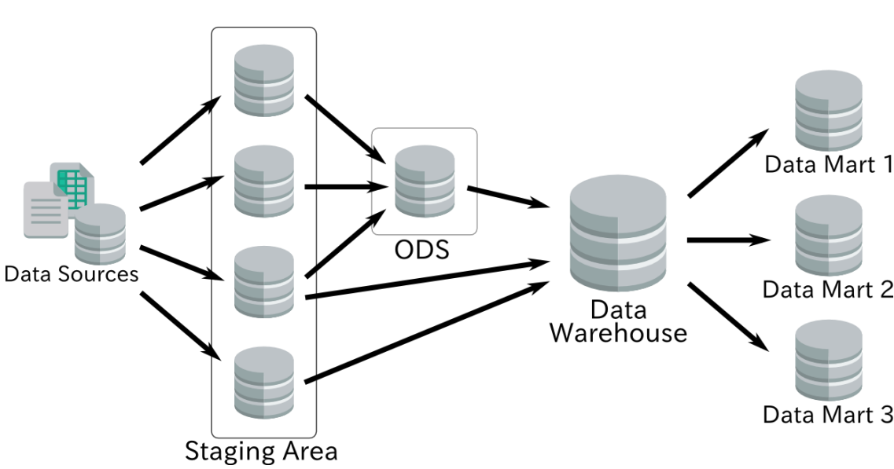
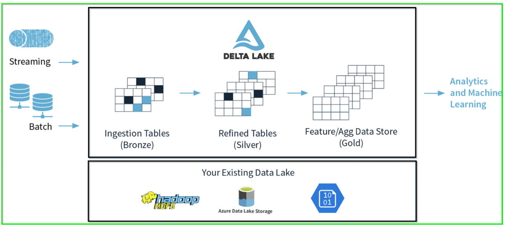
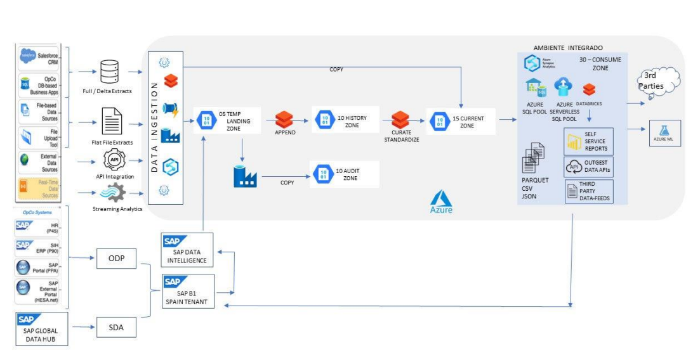

Tipos de entornos y arquitectura de datos
Los entornos se clasifican tanto por su ubicación física (instalación) como por las capas lógicas que gestionan el flujo y la calidad de los datos.
Entornos
Existen dos enfoques principales para la instalación de los Sistemas de Big Data y BI:
| Entorno | Características |
|---|---|
| On-premise | Implica una instalación local. Requiere una infraestructura complicada, un alto coste y mantenimiento constante. |
| Cloud (Nube) | Implica una instalación remota. Ofrece reducción de costes, mantenimiento automatizado y escalabilidad. |
Capas lógicas y zonas de la arquitectura

Existen diversas capas donde se procesan y almacenan los datos dentro de una arquitectura de DW:
- Staging Area: Es una zona de base de datos temporal donde se extrae la información. Aquí no se suele hacer ninguna transformación, y la información se trunca/inserta continuamente.
- ODS (Operational Data Store): Una zona de base de datos donde la información se prepara en un modelo multidimensional con tablas maestras y estrellas.
- Data Warehouse (DW): Representa la combinación de tablas de diferentes capas, como Stage y ODS. Puede incluir capas agregadas con datos precalculados.
- Data Mart (DM): Es un conjunto de tablas multidimensionales que representan un subconjunto de datos de la empresa (por ejemplo, el departamento de recursos humanos o secretaría).
- AUDIT ZONE: Zona de base de datos utilizada para guardar los logs de los procesos y ejecuciones que se desean registrar para un control más robusto de la solución.
Modelo analítico multidimensional en la nube (Estándar)

Para los entornos Cloud, se identifican zonas de flujo de datos basadas en la calidad y el estado de la información, que suelen denominarse Bronce, Silver y Gold:
| Zona | Nombre y Propósito |
|---|---|
| Bronce | TEMP LANDING ZONE (05): Zona temporal que ubica las extracciones de información sin ninguna transformación. |
| Silver | HISTORY ZONE (10): Almacena una copia histórica de cada extracción realizada, tanto en formato persistente como en base de datos. |
| Silver | CURRENT ZONE (15): Mantiene el último estado de los datos, ya limpios y con las transformaciones necesarias, en un modelo Datalake/Deltalake. |
| Gold | CONSUME ZONE (30): La zona final donde el modelo de base de datos (ej., SQL Server) está preparado para realizar el análisis posterior con herramientas de BI como PowerBI o Microstrategy. |
